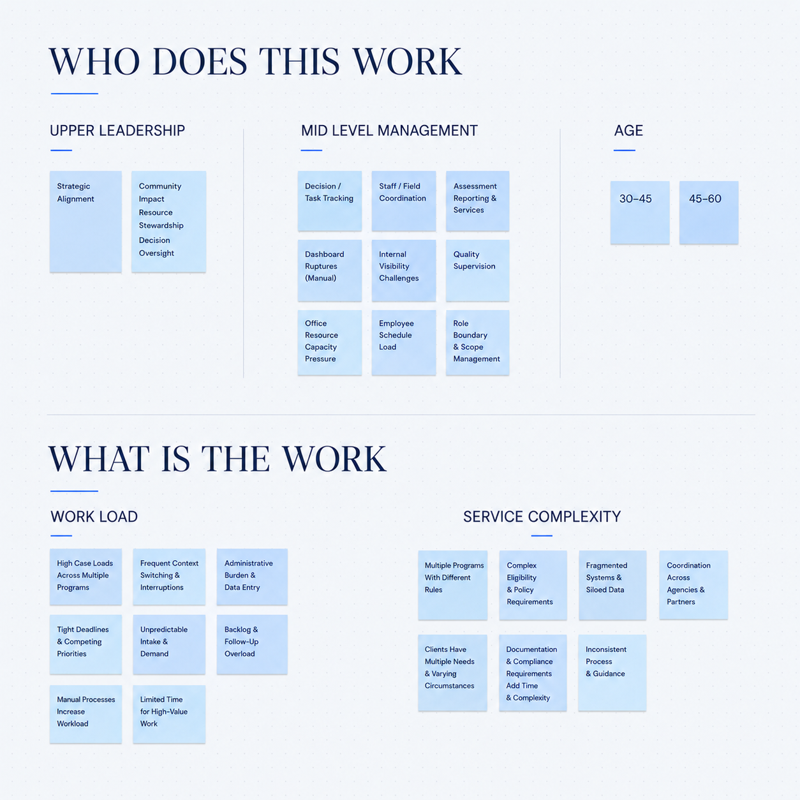
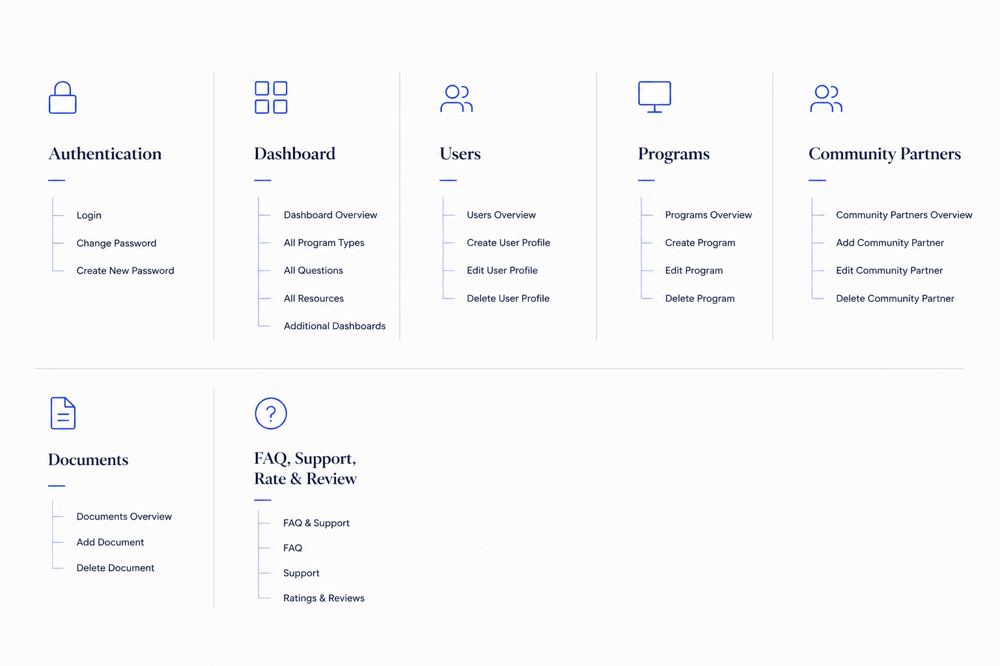
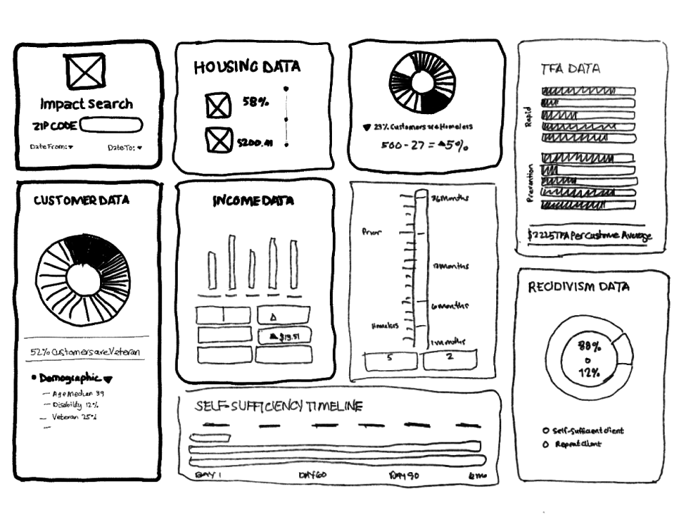
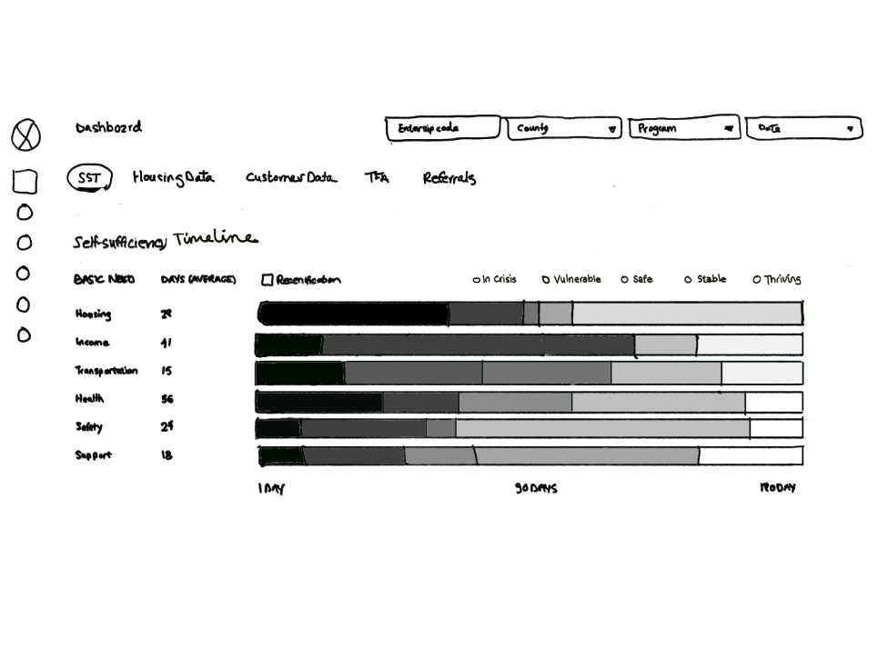
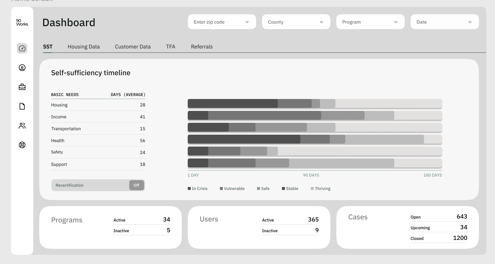
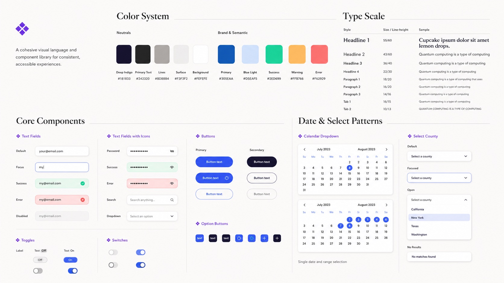
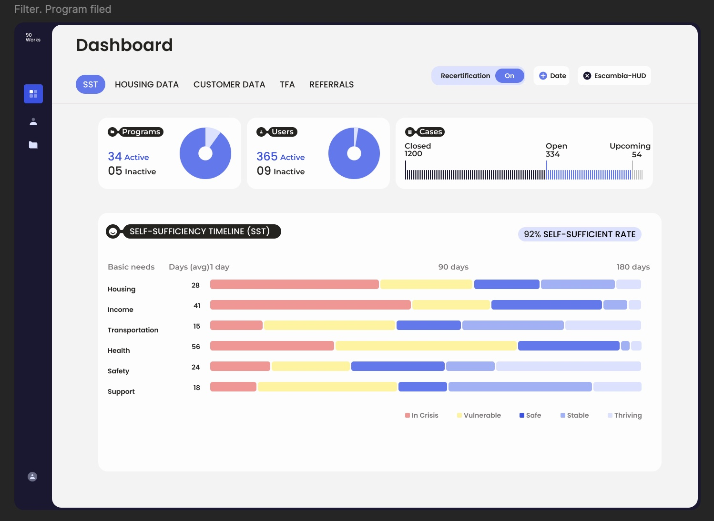
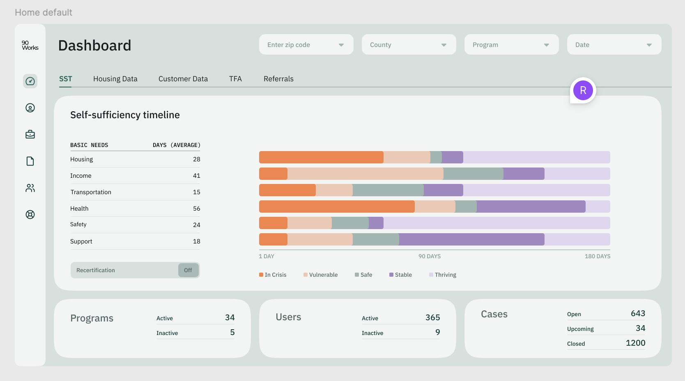

I designed a centralized reporting dashboard for Project 90 that helped nonprofit leaders monitor program performance, funding, service outcomes, and team activity, replacing fragmented spreadsheets and government reporting screens built for case level work.
The Challenge
Leadership lacked a fast, reliable way to understand organizational performance or identify where attention was needed. Reporting was manual, scattered across spreadsheets, and buried inside government databases designed for individual case documentation rather than leadership decisions.
My Contribution & Approach
As the lead UX/UI designer and sole designer on the product team, I synthesized 15 executive interviews into a top down reporting model: organizational health first, followed by program performance, funding, outcomes, and staff activity. For the MVP, I prioritized scannable KPI cards, program summaries, funding visibility, trend charts, and drill down filters.
Key Design Decision
The dashboard was organized around order of attention, not simply data availability. Leaders could scan overall performance first, identify areas requiring intervention, and then move into deeper program level reporting.
Outcome
Stakeholder feedback shifted the experience from a dense, text heavy report into a calmer, chart led dashboard with clearer hierarchy and faster scanning. The MVP was completed and internally tested; broader rollout paused after program funding ended.
Timeline
6 months
Role
UX/UI Lead Designer
Team
1 product manager, 2 engineers, 1 designer
Status
MVP completed & internally tested; funding lost before public launch.
~6 min read
00 / OVERVIEW
Administrative Reporting Dashboard
Designing a Program Performance & Reporting Dashboard that helps nonprofit leadership monitor program performance, service outcomes, funding visibility, and team activity from one centralized view.
The Challenge
Leadership needed a faster way to understand organizational performance and measure impact without relying on manual reporting, disconnected spreadsheets, or cumbersome government database screens built for a variety of users.
Timeline
6 months
Role
UX/UI Lead Designer, product strategy, research synthesis, information architecture
Status
MVP completed and internally tested; not publicly launched due to funding loss
I collaborated with leadership and end users to gather requirements, worked alongside engineers to assess feasibility, and delivered final design recommendations that shaped the MVP.
Design Goal
Create a clear, scalable dashboard that surfaces high-level KPIs first, supports program reporting, and helps executive users make confident operational decisions faster.
Project Toolkit
Slack
Trello
Microsoft Office
Microsoft Teams
Figma
FigJam
Adobe Color
Adobe Xd
InVision
Google Drive
Google Sheets
01 / DISCOVERY
Understanding the Reporting Gap
I started by translating insights from 15 executive interviews, alongside stakeholder needs, staff pain points, and reporting workflows, into a focused product opportunity.
Research Activities
Artifacts: affinity map
Reviewed existing reporting workflows and leadership visibility needs
Synthesized pain points from supervisors and administrators
Mapped user goals, frustrations, and information needs through empathy mapping
Grouped recurring themes through affinity mapping
Insights
Leadership lacked clear visibilityReporting was fragmented and difficult to analyzePoor systems created administrative frictionLeadership needed a high-level view, not more raw data
Discovery Artifact
Key Insight
Through affinity mapping, I identified that leadership did not simply need
more scattered data. They needed a centralized reporting experience that translated
complex case management activity into clear, easy to read reports around
program performance, funding accountability, outcomes, and
operational barriers.
Discovery Artifact
Affinity Map

Discovery Artifact: define problem statement
Executive users need a centralized way to monitor program health, funding performance, and service outcomes because existing reporting methods are fragmented, time-consuming, and difficult to scan at the leadership level.
02 / IDEATION & DESIGN
Turning Insights Into a Dashboard Structure
Design Flow
From strategy through component-level design. This phase connected research findings to product strategy, feature prioritization, information architecture, wireframes, and final UI direction.
Strategy
Prioritization
IA
Wireframes
UI System
Strategy & Prioritization
I prioritized high-impact, feasible dashboard features first: KPI cards, program summaries, funding visibility, and drill-down filters. Lower-priority ideas were reserved for later phases to keep the MVP focused and buildable.
Strategy Artifact
Prioritization Matrix
Structure & Information Architecture
I organized the dashboard around a top-down reporting model: executive summary first, then program performance, funding, outcomes, staff activity, and deeper reporting views. This allowed leadership to scan quickly while still supporting detailed analysis.

Wireframe Evolution
Early wireframes explored report-creation concepts alongside layout hierarchy, chart placement, filters, and drill-down behavior. Iterations focused on reducing cognitive load, improving scanability, and making the most important performance metrics visible first.


The final wireframe prioritized client performance by bringing key indicators to the forefront and adding filters for location and program views. Earlier iterations felt visually dense and overwhelming, so the refined layout simplified the hierarchy, surfaced the most actionable metrics first, and made it easier for leadership to compare performance across programs.

Artifact
Component Snapshot
I translated the visual direction into reusable KPI cards, filters, chart treatments, status indicators, and responsive layout patterns. Strong labels and non-color cues helped keep the system understandable across reporting states.

Final UI Artifact
Final Dashboard Screens
The final dashboard placed organizational health first, allowing leaders to scan active programs, users, cases, funding, and service outcomes before moving into deeper reporting views.

03 / VALIDATION
Using Feedback to Refine Clarity and Hierarchy
Because Project 90 remained in internal MVP testing, validation focused on
stakeholder feedback and iterative design review rather than public-launch metrics.
Testing Focus
What We Needed to Validate
Could leaders quickly identify overall client and program health?
Were key indicators visible before users had to dig into reporting?
Were charts, filters, and labels clear enough to support fast comparison?
Did the color system and charts reduce visual strain during screen-heavy work?
Feedback Themes
Color, Hierarchy & Visual Engagement
Stakeholders responded well to a blue-led visual system because it felt calm,
focused, and easier on the eyes during busy workdays. Brighter accents helped
distinguish important states without making the dashboard feel overly busy.
Feedback also showed that earlier reporting views relied too heavily on text.
I introduced clearer charts and visual summaries to make performance easier to
scan and compare, while building the color system to support a future dark-mode
experience.
Earlier Iteration
Heavy Reporting View
Earlier layouts placed system status lower on the page and required more
scanning to understand program activity and performance.

Refined Direction
System Health First
System status, program users, and active case counts moved into the overview,
with charts added to make performance easier to compare at a glance.
Internal Validation
What the Iterations Improved
Feedback from program managers and executives indicated that the refined interface
was easier to read and navigate, with clearer visibility into program performance,
client activity, and available funding. The resulting dashboard felt less like a
static report and more like a practical decision-support tool.
04 / REFLECTION
What I Learned—and What Would Have Come Next
Designing for Leadership Requires Restraint
The biggest challenge was not deciding what data could appear on the dashboard.
It was deciding what leadership needed to see first, what could remain secondary,
and how to make complex operational information feel clear at a glance.
What I Would Test Next
With additional runway, I would expand testing across more user roles, validate
dashboard KPIs against live reporting cycles, and continue iterating on custom
dashboard views, dark mode, exportable insights, and deeper drill-down reporting.
Project Context
The product reached MVP and internal testing, but the project paused when funding
was lost before broader validation and future-phase iterations could move forward.
The work remains a strong example of connecting research synthesis, product
strategy, information architecture, and UI systems into one cohesive reporting experience.